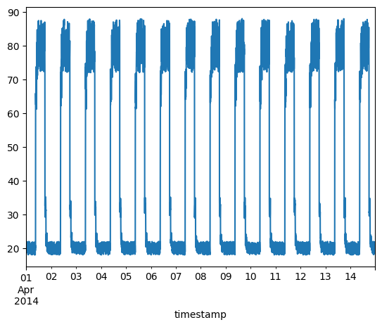
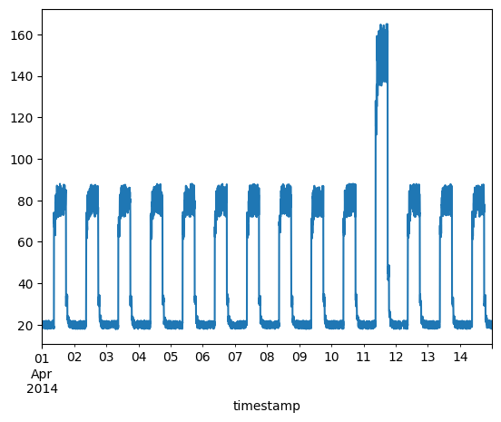
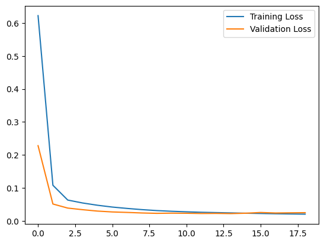
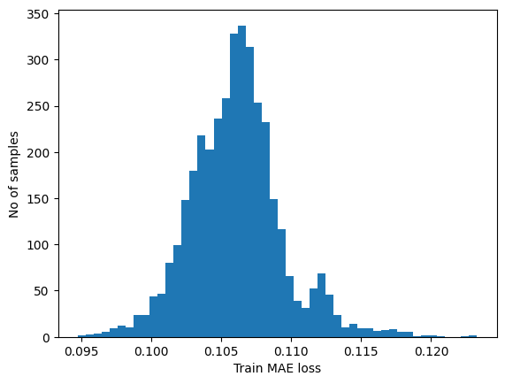
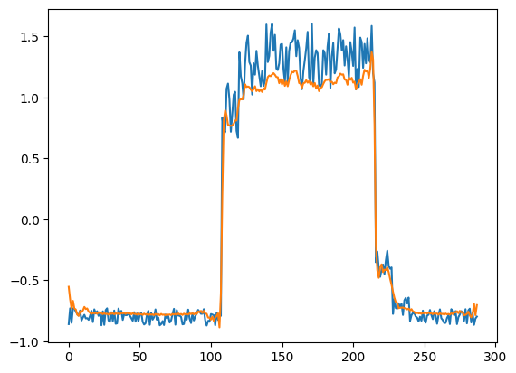
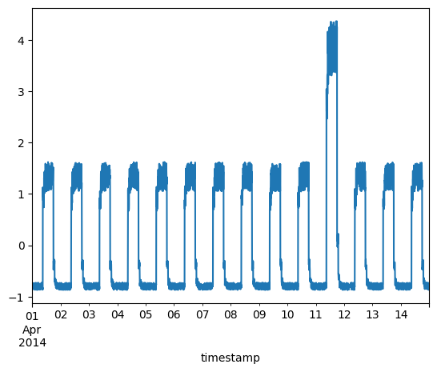
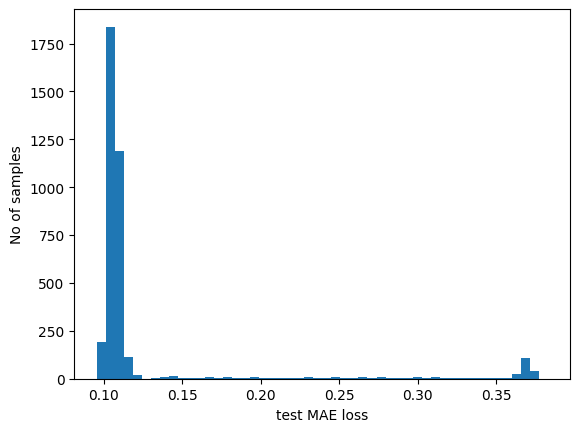
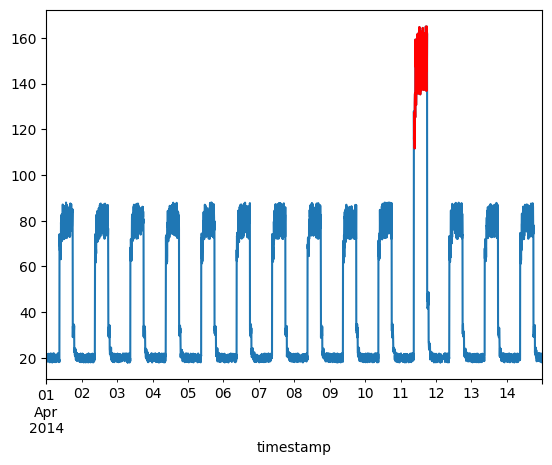

Timeseries anomaly detection using an Autoencoder
Author: pavithrasv
Date created: 2020/05/31
Last modified: 2020/05/31
Description: Detect anomalies in a timeseries using an Autoencoder.

Introduction
This script demonstrates how you can use a reconstruction convolutional autoencoder model to detect anomalies in timeseries data.
Setup
import numpy as np
import pandas as pd
import keras
from keras import layers
from matplotlib import pyplot as plt
Load the data
We will use the Numenta Anomaly Benchmark(NAB) dataset. It provides artificial timeseries data containing labeled anomalous periods of behavior. Data are ordered, timestamped, single-valued metrics.
We will use the art_daily_small_noise.csv file for training and the
art_daily_jumpsup.csv file for testing. The simplicity of this dataset
allows us to demonstrate anomaly detection effectively.
master_url_root = "https://raw.githubusercontent.com/numenta/NAB/master/data/"
df_small_noise_url_suffix = "artificialNoAnomaly/art_daily_small_noise.csv"
df_small_noise_url = master_url_root + df_small_noise_url_suffix
df_small_noise = pd.read_csv(
df_small_noise_url, parse_dates=True, index_col="timestamp"
)
df_daily_jumpsup_url_suffix = "artificialWithAnomaly/art_daily_jumpsup.csv"
df_daily_jumpsup_url = master_url_root + df_daily_jumpsup_url_suffix
df_daily_jumpsup = pd.read_csv(
df_daily_jumpsup_url, parse_dates=True, index_col="timestamp"
)
Quick look at the data
print(df_small_noise.head())
print(df_daily_jumpsup.head())
value
timestamp
2014-04-01 00:00:00 18.324919
2014-04-01 00:05:00 21.970327
2014-04-01 00:10:00 18.624806
2014-04-01 00:15:00 21.953684
2014-04-01 00:20:00 21.909120
value
timestamp
2014-04-01 00:00:00 19.761252
2014-04-01 00:05:00 20.500833
2014-04-01 00:10:00 19.961641
2014-04-01 00:15:00 21.490266
2014-04-01 00:20:00 20.187739
Visualize the data
Timeseries data without anomalies
We will use the following data for training.
fig, ax = plt.subplots()
df_small_noise.plot(legend=False, ax=ax)
plt.show()

Timeseries data with anomalies
We will use the following data for testing and see if the sudden jump up in the data is detected as an anomaly.
fig, ax = plt.subplots()
df_daily_jumpsup.plot(legend=False, ax=ax)
plt.show()

Prepare training data
Get data values from the training timeseries data file and normalize the
value data. We have a value for every 5 mins for 14 days.
- 24 * 60 / 5 = 288 timesteps per day
- 288 * 14 = 4032 data points in total
# Normalize and save the mean and std we get,
# for normalizing test data.
training_mean = df_small_noise.mean()
training_std = df_small_noise.std()
df_training_value = (df_small_noise - training_mean) / training_std
print("Number of training samples:", len(df_training_value))
Number of training samples: 4032
Create sequences
Create sequences combining TIME_STEPS contiguous data values from the
training data.
TIME_STEPS = 288
# Generated training sequences for use in the model.
def create_sequences(values, time_steps=TIME_STEPS):
output = []
for i in range(len(values) - time_steps + 1):
output.append(values[i : (i + time_steps)])
return np.stack(output)
x_train = create_sequences(df_training_value.values)
print("Training input shape: ", x_train.shape)
Training input shape: (3745, 288, 1)
Build a model
We will build a convolutional reconstruction autoencoder model. The model will
take input of shape (batch_size, sequence_length, num_features) and return
output of the same shape. In this case, sequence_length is 288 and
num_features is 1.
model = keras.Sequential(
[
layers.Input(shape=(x_train.shape[1], x_train.shape[2])),
layers.Conv1D(
filters=32,
kernel_size=7,
padding="same",
strides=2,
activation="relu",
),
layers.Dropout(rate=0.2),
layers.Conv1D(
filters=16,
kernel_size=7,
padding="same",
strides=2,
activation="relu",
),
layers.Conv1DTranspose(
filters=16,
kernel_size=7,
padding="same",
strides=2,
activation="relu",
),
layers.Dropout(rate=0.2),
layers.Conv1DTranspose(
filters=32,
kernel_size=7,
padding="same",
strides=2,
activation="relu",
),
layers.Conv1DTranspose(filters=1, kernel_size=7, padding="same"),
]
)
model.compile(optimizer=keras.optimizers.Adam(learning_rate=0.001), loss="mse")
model.summary()
Model: "sequential"
┏━━━━━━━━━━━━━━━━━━━━━━━━━━━━━━━━━┳━━━━━━━━━━━━━━━━━━━━━━━━━━━┳━━━━━━━━━━━━┓ ┃ Layer (type) ┃ Output Shape ┃ Param # ┃ ┡━━━━━━━━━━━━━━━━━━━━━━━━━━━━━━━━━╇━━━━━━━━━━━━━━━━━━━━━━━━━━━╇━━━━━━━━━━━━┩ │ conv1d (Conv1D) │ (None, 144, 32) │ 256 │ ├─────────────────────────────────┼───────────────────────────┼────────────┤ │ dropout (Dropout) │ (None, 144, 32) │ 0 │ ├─────────────────────────────────┼───────────────────────────┼────────────┤ │ conv1d_1 (Conv1D) │ (None, 72, 16) │ 3,600 │ ├─────────────────────────────────┼───────────────────────────┼────────────┤ │ conv1d_transpose │ (None, 144, 16) │ 1,808 │ │ (Conv1DTranspose) │ │ │ ├─────────────────────────────────┼───────────────────────────┼────────────┤ │ dropout_1 (Dropout) │ (None, 144, 16) │ 0 │ ├─────────────────────────────────┼───────────────────────────┼────────────┤ │ conv1d_transpose_1 │ (None, 288, 32) │ 3,616 │ │ (Conv1DTranspose) │ │ │ ├─────────────────────────────────┼───────────────────────────┼────────────┤ │ conv1d_transpose_2 │ (None, 288, 1) │ 225 │ │ (Conv1DTranspose) │ │ │ └─────────────────────────────────┴───────────────────────────┴────────────┘
Total params: 9,505 (37.13 KB)
Trainable params: 9,505 (37.13 KB)
Non-trainable params: 0 (0.00 B)
Train the model
Please note that we are using x_train as both the input and the target
since this is a reconstruction model.
history = model.fit(
x_train,
x_train,
epochs=50,
batch_size=128,
validation_split=0.1,
callbacks=[
keras.callbacks.EarlyStopping(monitor="val_loss", patience=5, mode="min")
],
)
Epoch 1/50
26/27 ━━━━━━━━━━━━━━━━━━━[37m━ 0s 4ms/step - loss: 0.8419
WARNING: All log messages before absl::InitializeLog() is called are written to STDERR
I0000 00:00:1700346169.474466 1961179 device_compiler.h:187] Compiled cluster using XLA! This line is logged at most once for the lifetime of the process.
27/27 ━━━━━━━━━━━━━━━━━━━━ 10s 187ms/step - loss: 0.8262 - val_loss: 0.2280
Epoch 2/50
27/27 ━━━━━━━━━━━━━━━━━━━━ 0s 5ms/step - loss: 0.1485 - val_loss: 0.0513
Epoch 3/50
27/27 ━━━━━━━━━━━━━━━━━━━━ 0s 5ms/step - loss: 0.0659 - val_loss: 0.0389
Epoch 4/50
27/27 ━━━━━━━━━━━━━━━━━━━━ 0s 5ms/step - loss: 0.0563 - val_loss: 0.0341
Epoch 5/50
27/27 ━━━━━━━━━━━━━━━━━━━━ 0s 5ms/step - loss: 0.0489 - val_loss: 0.0298
Epoch 6/50
27/27 ━━━━━━━━━━━━━━━━━━━━ 0s 5ms/step - loss: 0.0434 - val_loss: 0.0272
Epoch 7/50
27/27 ━━━━━━━━━━━━━━━━━━━━ 0s 5ms/step - loss: 0.0386 - val_loss: 0.0258
Epoch 8/50
27/27 ━━━━━━━━━━━━━━━━━━━━ 0s 5ms/step - loss: 0.0349 - val_loss: 0.0241
Epoch 9/50
27/27 ━━━━━━━━━━━━━━━━━━━━ 0s 5ms/step - loss: 0.0319 - val_loss: 0.0230
Epoch 10/50
27/27 ━━━━━━━━━━━━━━━━━━━━ 0s 5ms/step - loss: 0.0297 - val_loss: 0.0236
Epoch 11/50
27/27 ━━━━━━━━━━━━━━━━━━━━ 0s 5ms/step - loss: 0.0279 - val_loss: 0.0233
Epoch 12/50
27/27 ━━━━━━━━━━━━━━━━━━━━ 0s 5ms/step - loss: 0.0264 - val_loss: 0.0225
Epoch 13/50
27/27 ━━━━━━━━━━━━━━━━━━━━ 0s 5ms/step - loss: 0.0255 - val_loss: 0.0228
Epoch 14/50
27/27 ━━━━━━━━━━━━━━━━━━━━ 0s 5ms/step - loss: 0.0245 - val_loss: 0.0223
Epoch 15/50
27/27 ━━━━━━━━━━━━━━━━━━━━ 0s 5ms/step - loss: 0.0236 - val_loss: 0.0234
Epoch 16/50
27/27 ━━━━━━━━━━━━━━━━━━━━ 0s 5ms/step - loss: 0.0227 - val_loss: 0.0256
Epoch 17/50
27/27 ━━━━━━━━━━━━━━━━━━━━ 0s 5ms/step - loss: 0.0219 - val_loss: 0.0240
Epoch 18/50
27/27 ━━━━━━━━━━━━━━━━━━━━ 0s 5ms/step - loss: 0.0214 - val_loss: 0.0245
Epoch 19/50
27/27 ━━━━━━━━━━━━━━━━━━━━ 0s 5ms/step - loss: 0.0207 - val_loss: 0.0250
Let's plot training and validation loss to see how the training went.
plt.plot(history.history["loss"], label="Training Loss")
plt.plot(history.history["val_loss"], label="Validation Loss")
plt.legend()
plt.show()

Detecting anomalies
We will detect anomalies by determining how well our model can reconstruct the input data.
- Find MAE loss on training samples.
- Find max MAE loss value. This is the worst our model has performed trying
to reconstruct a sample. We will make this the
thresholdfor anomaly detection. - If the reconstruction loss for a sample is greater than this
thresholdvalue then we can infer that the model is seeing a pattern that it isn't familiar with. We will label this sample as ananomaly.
# Get train MAE loss.
x_train_pred = model.predict(x_train)
train_mae_loss = np.mean(np.abs(x_train_pred - x_train), axis=1)
plt.hist(train_mae_loss, bins=50)
plt.xlabel("Train MAE loss")
plt.ylabel("No of samples")
plt.show()
# Get reconstruction loss threshold.
threshold = np.max(train_mae_loss)
print("Reconstruction error threshold: ", threshold)
118/118 ━━━━━━━━━━━━━━━━━━━━ 1s 6ms/step

Reconstruction error threshold: 0.1232659916089631
Compare recontruction
Just for fun, let's see how our model has recontructed the first sample. This is the 288 timesteps from day 1 of our training dataset.
# Checking how the first sequence is learnt
plt.plot(x_train[0])
plt.plot(x_train_pred[0])
plt.show()

Prepare test data
df_test_value = (df_daily_jumpsup - training_mean) / training_std
fig, ax = plt.subplots()
df_test_value.plot(legend=False, ax=ax)
plt.show()
# Create sequences from test values.
x_test = create_sequences(df_test_value.values)
print("Test input shape: ", x_test.shape)
# Get test MAE loss.
x_test_pred = model.predict(x_test)
test_mae_loss = np.mean(np.abs(x_test_pred - x_test), axis=1)
test_mae_loss = test_mae_loss.reshape((-1))
plt.hist(test_mae_loss, bins=50)
plt.xlabel("test MAE loss")
plt.ylabel("No of samples")
plt.show()
# Detect all the samples which are anomalies.
anomalies = test_mae_loss > threshold
print("Number of anomaly samples: ", np.sum(anomalies))
print("Indices of anomaly samples: ", np.where(anomalies))

Test input shape: (3745, 288, 1)
118/118 ━━━━━━━━━━━━━━━━━━━━ 0s 1ms/step

Number of anomaly samples: 394
Indices of anomaly samples: (array([1654, 2702, 2703, 2704, 2705, 2706, 2707, 2708, 2709, 2710, 2711,
2712, 2713, 2714, 2715, 2716, 2717, 2718, 2719, 2720, 2721, 2722,
2723, 2724, 2725, 2726, 2727, 2728, 2729, 2730, 2731, 2732, 2733,
2734, 2735, 2736, 2737, 2738, 2739, 2740, 2741, 2742, 2743, 2744,
2745, 2746, 2747, 2748, 2749, 2750, 2751, 2752, 2753, 2754, 2755,
2756, 2757, 2758, 2759, 2760, 2761, 2762, 2763, 2764, 2765, 2766,
2767, 2768, 2769, 2770, 2771, 2772, 2773, 2774, 2775, 2776, 2777,
2778, 2779, 2780, 2781, 2782, 2783, 2784, 2785, 2786, 2787, 2788,
2789, 2790, 2791, 2792, 2793, 2794, 2795, 2796, 2797, 2798, 2799,
2800, 2801, 2802, 2803, 2804, 2805, 2806, 2807, 2808, 2809, 2810,
2811, 2812, 2813, 2814, 2815, 2816, 2817, 2818, 2819, 2820, 2821,
2822, 2823, 2824, 2825, 2826, 2827, 2828, 2829, 2830, 2831, 2832,
2833, 2834, 2835, 2836, 2837, 2838, 2839, 2840, 2841, 2842, 2843,
2844, 2845, 2846, 2847, 2848, 2849, 2850, 2851, 2852, 2853, 2854,
2855, 2856, 2857, 2858, 2859, 2860, 2861, 2862, 2863, 2864, 2865,
2866, 2867, 2868, 2869, 2870, 2871, 2872, 2873, 2874, 2875, 2876,
2877, 2878, 2879, 2880, 2881, 2882, 2883, 2884, 2885, 2886, 2887,
2888, 2889, 2890, 2891, 2892, 2893, 2894, 2895, 2896, 2897, 2898,
2899, 2900, 2901, 2902, 2903, 2904, 2905, 2906, 2907, 2908, 2909,
2910, 2911, 2912, 2913, 2914, 2915, 2916, 2917, 2918, 2919, 2920,
2921, 2922, 2923, 2924, 2925, 2926, 2927, 2928, 2929, 2930, 2931,
2932, 2933, 2934, 2935, 2936, 2937, 2938, 2939, 2940, 2941, 2942,
2943, 2944, 2945, 2946, 2947, 2948, 2949, 2950, 2951, 2952, 2953,
2954, 2955, 2956, 2957, 2958, 2959, 2960, 2961, 2962, 2963, 2964,
2965, 2966, 2967, 2968, 2969, 2970, 2971, 2972, 2973, 2974, 2975,
2976, 2977, 2978, 2979, 2980, 2981, 2982, 2983, 2984, 2985, 2986,
2987, 2988, 2989, 2990, 2991, 2992, 2993, 2994, 2995, 2996, 2997,
2998, 2999, 3000, 3001, 3002, 3003, 3004, 3005, 3006, 3007, 3008,
3009, 3010, 3011, 3012, 3013, 3014, 3015, 3016, 3017, 3018, 3019,
3020, 3021, 3022, 3023, 3024, 3025, 3026, 3027, 3028, 3029, 3030,
3031, 3032, 3033, 3034, 3035, 3036, 3037, 3038, 3039, 3040, 3041,
3042, 3043, 3044, 3045, 3046, 3047, 3048, 3049, 3050, 3051, 3052,
3053, 3054, 3055, 3056, 3057, 3058, 3059, 3060, 3061, 3062, 3063,
3064, 3065, 3066, 3067, 3068, 3069, 3070, 3071, 3072, 3073, 3074,
3075, 3076, 3077, 3078, 3079, 3080, 3081, 3082, 3083, 3084, 3085,
3086, 3087, 3088, 3089, 3090, 3091, 3092, 3093, 3094]),)
Plot anomalies
We now know the samples of the data which are anomalies. With this, we will
find the corresponding timestamps from the original test data. We will be
using the following method to do that:
Let's say time_steps = 3 and we have 10 training values. Our x_train will
look like this:
- 0, 1, 2
- 1, 2, 3
- 2, 3, 4
- 3, 4, 5
- 4, 5, 6
- 5, 6, 7
- 6, 7, 8
- 7, 8, 9
All except the initial and the final time_steps-1 data values, will appear in
time_steps number of samples. So, if we know that the samples
[(3, 4, 5), (4, 5, 6), (5, 6, 7)] are anomalies, we can say that the data point
5 is an anomaly.
# data i is an anomaly if samples [(i - timesteps + 1) to (i)] are anomalies
anomalous_data_indices = []
for data_idx in range(TIME_STEPS - 1, len(df_test_value) - TIME_STEPS + 1):
if np.all(anomalies[data_idx - TIME_STEPS + 1 : data_idx]):
anomalous_data_indices.append(data_idx)
Let's overlay the anomalies on the original test data plot.
df_subset = df_daily_jumpsup.iloc[anomalous_data_indices]
fig, ax = plt.subplots()
df_daily_jumpsup.plot(legend=False, ax=ax)
df_subset.plot(legend=False, ax=ax, color="r")
plt.show()
